22 Tomato Diseases: Identification, Treatment and Prevention
1. Early Blight

Early blight, caused by Alternaria fungus, is the most common type of leaf spot disease on tomatoes. Early blight is more prevalent in hot, humid regions and remains in the soil for one year. In areas impacted by early blight, choose disease-resistant cultivars with Resistant to EB (Early Blight) labels.
Symptoms:
- Dark brown spots encircled with rings start on the lowest leaves and move up, eventually causing foliage to shrivel, dry up, and fall.
- Lesions develop on stems and fruits. The defoliation causes sunscald.
Management:
- Remove lower leaves, including up to a third of the infected foliage.
- Apply a tomato fungicide at the first sign of infection or when weather conditions are favorable for the disease to develop.
- Do not compost affected plants.
Prevention:
- Prevent early blight by watering at the soil level and mulching.
- Keep adequate space between plants and rows; use stakes and practice good weed control.
- Prune bottom leaves from plants and rotate tomato plants and other nightshades every two years.
- Copper and/or sulfur sprays can prevent further development of the fungus.
2. Fusarium or Verticillium Wilt
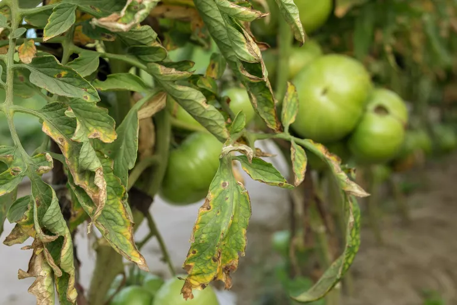
Fusarium or Verticillium WiltFusarium wilt and verticillium wilt are often confused with one another—their symptoms are similar, but they're caused by separate fungi.
Symptoms:
- In warm weather, the entire plant wilts down during the day, often recovering at night. Symptoms start on older, lower leaves and move upward. Eventually leaves on one side turn yellow, dry up, turn brown, and fall off. The inner tissue of the lower stem turns red or black. Plants may die quickly or succumb in a week or more.
Management:
- Treatment is similar for both types of wilt. Remove and dispose of infected plants and roots. Fungus spores can remain in soil for many years, but this disease does not spread among plants grown in the same season. (There is no fungicide for wilt.)
Prevention:
- Prevent the diseases by planting resistant varieties labeled VFN or FN. Keep tools clean and practice a three-year crop rotation. Fusarium wilt is hosted by pigweed and crabgrass, so weed control is important. Avoid excessive nitrogen fertilizers, which encourage disease.
3. Powdery Mildew
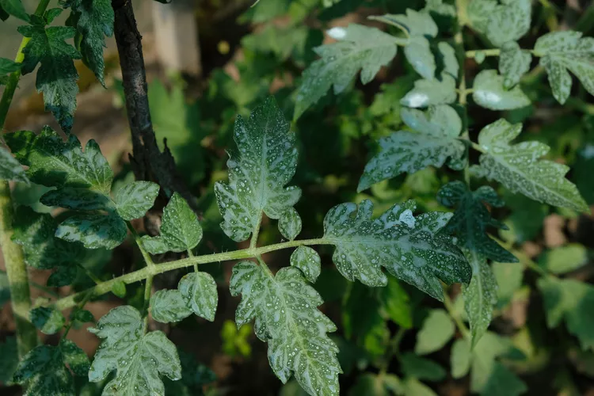
Powdery MildewPowdery mildew spreads by three different types of airborne fungi. The type of spore differs according to temperature, but high humidity levels increase disease occurrence. Fruits do not develop powdery mildew, but defoliation leads to sunscald and crop loss.
Symptoms:
- Yellow spots appear on leaves, turning to white powdery lesions coating the entire leaf and appearing on stems.
Management:
- Stop the spread of powdery mildew by treating the entire crop with sulfur dust, fungicides, biofungicides, and horticultural oils. Remove infected leaves and buds.
Prevention:
- Prevent powdery mildew by allowing adequate space between plants. Prune tomato plants for good air circulation. Provide regular, consistent hydration at the soil level and avoid wetting leaves.
04. Anthracnose
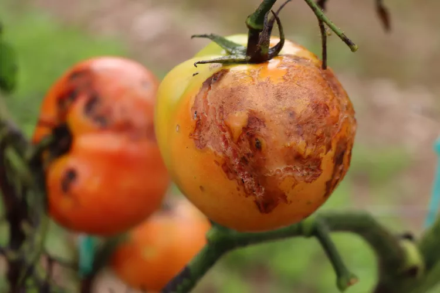
AnthracnoseAnthracnose is a common fungal disease that causes fruit to rot. It's caused by a fungus that favors warm temperatures, wet conditions, and poorly-drained soil. Overripe tomatoes that come in contact with wet soil are especially susceptible.
Symptoms:
- Small, round, and sunken water-soaked spots appear on fruit and increase in concentric circles, causing tomatoes to rot. Leaves may develop small, round spots with yellow halos. Infection starts in small, immature fruit, but symptoms don't appear until ripening.
Management:
- Copper sprays offer some resistance, but these fungicides are more effective as a preventive measure. Apply tomato fungicide to your entire crop at the first sign of infection or when weather conditions are favorable for disease to take hold.
Prevention:
- Plant certified seeds in well-draining soil; remove the lower 12 inches of leaves to prevent contact with the soil; stake plants; mulch; practice good weed control; and water at the soil level. Avoid letting tomatoes overripen on the vine and dispose of rotten fruit and debris. Practice crop rotation every two years along with other nightshades.
05. Septoria Leaf Spot

Septoria Leaf SpotThe Septoria fungus causes septoria leaf spot. The fungal infection affects leaves but not the fruit. This fungus thrives in warm, wet weather, so watch for symptoms and act immediately.
Symptoms:
- Symptoms are similar to early blight, but septoria more often appears at the first fruit set. This fungus appears on leaves as multiple small, dark circles that enlarge to 1/3- to 1/4-inch in diameter. The spots develop a tan or gray center, and the leaves eventually wilt and fall off. It spreads rapidly, causing loss of older leaves first, then infects new foliage, and can quickly move through an entire crop. Early leaf drop leads to fruit loss and sunscald.
Management:
- The most effective treatment is repeated applications with a tomato fungicide or biofungicide for the entire tomato crop. Copper sprays and Serenade fungicide are somewhat effective at halting the spread of symptoms. Remove infected leaves to prevent the spread of spores to other leaves, as water splashing on the leaves helps transmit the disease.
Prevention:
- Good garden sanitation is critical for preventing septoria leaf spot. Remove fallen leaves and debris from the garden immediately. Clean tools before and after working with plants, water at ground level, and control insect pests. Rotate your tomato crops every three years.
06. Botrytis Gray Mold
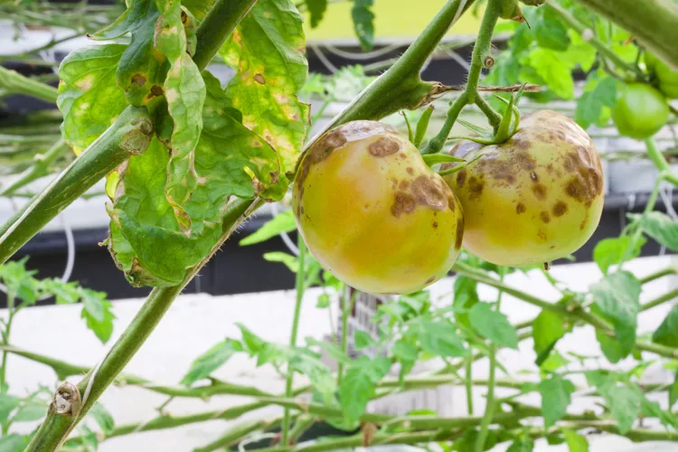
Botrytis Gray MoldBotrytis develops from the fungus Botrytis cinerea. Infection takes root in damaged stems or pruning cuts and can lie dormant for up to 12 weeks. Spores are spread by wind and water and are most prevalent in cooler temperatures. Tomato flowers are also susceptible to this fungus.
Symptoms:
- Brown lesions appear on leaves and stems. A whitish soft rot appears on fruits. The mold causes tomatoes to rot after harvest. Leaves die and fall off, and stem girdling leads to wilt.
Management:
- Botrytis often dies back when temperatures rise. Treat widespread or persistent infection with tomato fungicide or biofungicide with a specific application for gray mold.
Prevention:
- Prevent botrytis by pruning plants in the early afternoon, which allows cuts to dry quickly. Avoid overhead watering and working with wet plants. Leave adequate spacing between plants and rows for good air circulation.
07. Bacterial Speck

Bacterial SpeckBacterial speck is one of several bacterial problems that affect tomato plants by reducing yields. The bacteria Pseudomonas syringae cause bacterial speck during persistent cool, wet weather. Bacterial speck spreads by splashing water on the leaves. It can't be cured, but there are steps to take to stop it from spreading.
Symptoms:
- Yellow tissue surrounds small, irregular, dark brown to black spots close to leaf margins. Spots appear raised on mature fruit, but they can also appear flat or sunken.
Management:
- Treat plants with a copper fungicide during cool, wet weather. Hot weather stops the pathogen from spreading.
Prevention:
- Delay planting until weather conditions are warmer and drier. Avoid overhead irrigation and rotate tomatoes and other nightshades every year.
08. Southern Blight
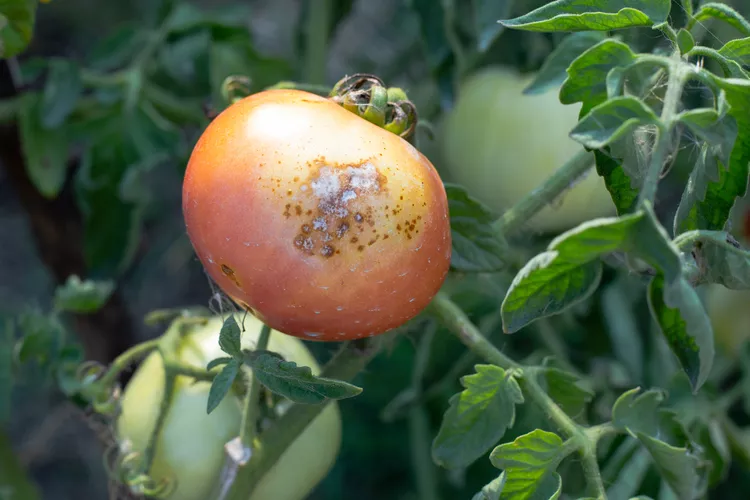
Southern BlightSouthern blight is caused by the soilborne fungus Athelia rolfsii, which girdles the tomato stem and prevents the plant from taking up water and nutrients. More prevalent in southern regions, it favors high temperatures, moist conditions, and acidic soil. Southern blight persists in the soil for years.
It not only affects tomatoes, but it also impacts peppers, beans, cantaloupes, carrots, potatoes, watermelon, and peanuts, among others.
Symptoms:
- Black-brown round lesions appear on stems near ground level and spread rapidly, forming a white mold that produces sunken brown necrotic tissue. Plants wilt and fall over, and fruits that contact the soil develop yellow spots that evolve into water-soaked lesions. Young plants may collapse at the soil line. Fruit near the stem can become infected, as well. Tomatoes rot within three to four days.
Management:
- Fungicides and biofungicides can help manage southern blight. Soil fumigants can be used, but are expensive.
Prevention:
- Preventive steps include polarization to kill spores, crop rotation, and maintaining soil pH levels for tomatoes. Avoid planting during wet weather with expected high temperatures. Remove plant debris and till or disk the soil several times before planting. Dispose of infected plants and plant debris, but do not compost. Eliminate weeds and rotate tomatoes with non-host crops.
09. Gray Leaf Spot
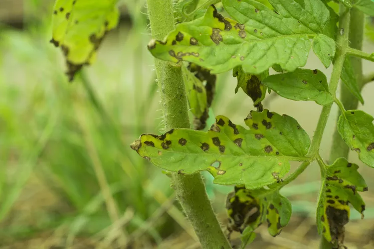
Gray Leaf SpotGray leaf spot is a fungal disease that affects mainly the leaves of tomatoes, starting with the oldest leaves, although it can also infect the stems of the plant. It does not infect the fruit, although the disease can be harbored in the seeds of the infected plant.
Symptoms:
- Small, dark spots with yellow halos appear on the top and bottom surfaces of the leaves. The spots enlarge and turn a grayish brown. Eventually, the centers of the spots crack and fall out. Surrounding leaf areas will turn yellow, and the leaves will dry out and drop. Fruit production is inhibited.
Management:
- Warm, moist conditions worsen gray leaf spot problems. Remove all affected plants and fall garden debris. Do not compost infected plants.
Prevention:
- Cherry and grape tomato plants are most often impacted. Select resistant varieties. Rotate crops to avoid planting in infected soil.
10. Late Blight

Late BlightLate blight is a mold disease affecting tomato leaves, stems, and fruit. It develops in cool, wet weather and spreads rapidly. If you suspect you have late blight, contact your local extension service for specific identification because there are many strains of late blight.
Symptoms:
- Greasy-looking, irregularly shaped dark brown blotches with green-gray edges appear on leaves. A ring of white mold develops around the spots, especially in wet weather. The spots eventually turn dry and papery. Blackened areas may appear on the stems. The fruit also develops large, irregularly shaped, greasy gray spots and can turn mushy from a secondary bacterial infection.
Management:
- Copper sprays offer some control. The fungicide Serenade works best as a deterrent rather than a cure. Late blight can overwinter in soil, tomato debris, and seeds, even in colder areas. Remove all debris. Rotate crops to prevent infections the following year.
Prevention:
- Rotate crops each year, plant blight-resistant varieties, promote air circulation between plants by spacing them out properly, and pruning leaves that touch.
11. Blossom End Rot

Blossom End Rot
Blossom end rot is generally attributed to a lack of calcium availability during fruit set. This could be caused by too much high-nitrogen fertilizer or uneven watering, resulting in fluctuations in nutrient availability. It's a physiological disorder, not a disease, but it still results in fruit loss.
Symptoms:
- Dark brown or black spots develop at the blossom end of the fruit and enlarge as the fruit rots. The spots look water-soaked.
Management:
- Remove affected fruit and provide regular, deep waterings. Add garden lime to the soil to help plants uptake water and nutrients. Use a fertilizer low in nitrogen and high in phosphorus.
Prevention:
- Water on a consistent schedule and provide well-balanced fertilizer.
12. Buckeye Rot

Buckeye RotBuckeye rot is more common in Southern states, especially during warm, wet periods. Buckeye rot affects both green and ripe fruit.
Symptoms:
- A small brown spot will enlarge and develop concentric rings resembling a buckeye. The affected area may appear round or oblong, and the firm lesion with smooth margins becomes soft and decayed as the disease progresses.
Management:
- Remove affected fruit. Avoid surface water from flooding the plants. Keep future fruits from making contact with the soil.
Prevention:
- Stake or cage tomatoes to prevent them from touching the soil, and always plant in soil with excellent drainage.
13. Gray Wall
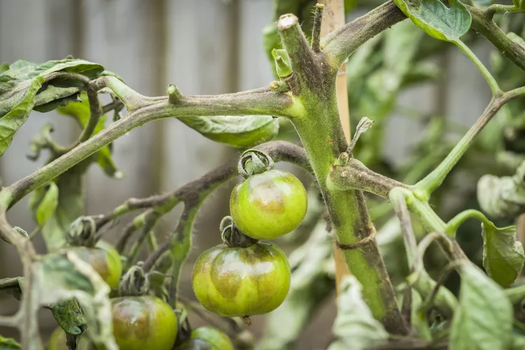
Gray WallGray wall is essentially a ripening problem. There's no known associated pathogen or treatment, only preventive steps. Cool temperatures and stressed or unhealthy plants contribute to the problem.
Symptoms:
- The green fruits may have a gray cast or flattened, gray blotches. Ripe fruit has a mottled appearance and green or brown areas on the inside of the fruit.
Management:
- Good growing conditions help prevent gray wall. Make sure plants are not heavily shaded. Evenly water and regularly fertilize plants. Keep the soil from becoming compacted around the roots.
Prevention:
- Choose mosaic-resistant tomato varieties, promote healthy soil ecology, and fertilize plants properly.
14. Leaf Mold
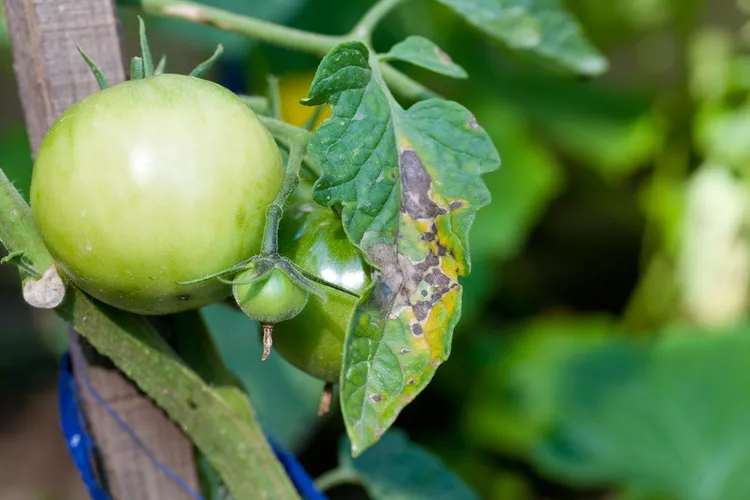
Leaf MoldLeaf mold is a fungus caused by Passalora fulva and it occurs most frequently in humid conditions.
Symptoms:
- Leaf mold appears as pale green or yellowish spots on the upper leaves. When it's very humid, the spots occur on the bottom surfaces of the leaves and then become covered in a gray, velvety growth of fungal spores. Fruits can have a leathery, blackish rot near the stem.
Management:
- Increase air circulation by pruning, spacing, and staking tomato plants to control the disease. Avoid watering overhead to keep leaves dry.
Prevention:
- Crop rotation can make a critical difference in preventing leaf mold, and you can also use a preventive fungicide.
15. Tomato Pith Necrosis
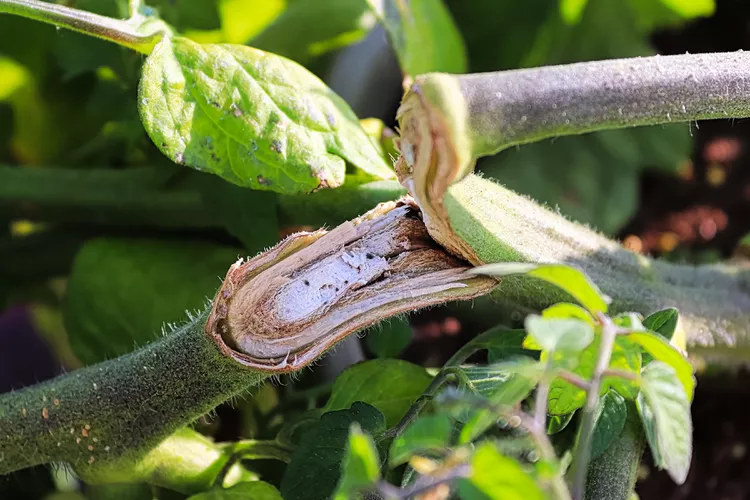
Tomato Pith NecrosisTomato pith necrosis is a disease caused by soil-borne Pseudomonas bacteria. It occurs during cloudy, cool, and moist conditions.
Symptoms:
- An early symptom is the blackening of the stems and leaves. Later symptoms involve split stems or stems that shrink and crack. The pith (stem interior) disintegrates and becomes hollow, disrupting water flow, and causing yellowing leaves.
Management:
- Warmer weather can resolve the issue. But to manage the disease, do not water from above, keep soil adequately moist, and remove and dispose of dead and diseased plants and roots.
Prevention:
- Rotate crops regularly, since the bacteria can remain in the soil for a few years, it's best to rotate crops.
16. Damping Off
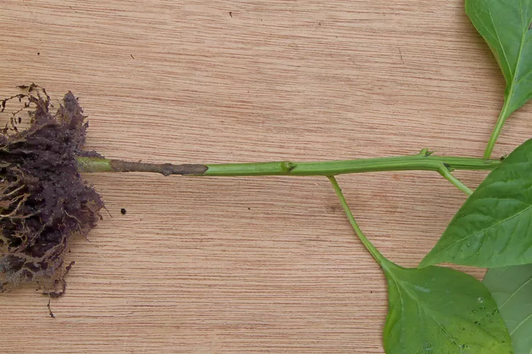
Damping OffDamping off is a fungal disease caused by Rhizoctonia that affects tomato plant seedlings. This fungus develops in cool, wet, and rich soils.
Symptoms:
- Seedlings may fail to emerge or the stems are water-soaked.
Management:
- When planting tomatoes, plant seeds indoors and do not put them in soil with high nitrogen levels. Add nitrogen fertilizer after seedlings are more established, which is when they have their first true leaves. It's always good practice to keep the surface of the soil dry between waterings.
Prevention:
- Use well-draining soil, avoid over-watering, sanitize garden tools, and maintain space between each tomato plant.
17. Mosaic Virus

Mosaic VirusMosaic virus is transmitted in many ways, including seed, grafting, pests, or handling by human hands. It's also a difficult virus to eradicate since it survives in plant debris for over 50 years.
Symptoms:
- Curling leaves may become mottled, new leaflets are small, and infected fruit is brown inside. Growth can be generally light in color. The fruit may have a mottled mosaic look on the skin.
Management:
- Control of mosaic virus is difficult. Reflective mulches may help prevent the problem.
Prevention:
- Plant resistant varieties, rotate crops, use natural insecticides, keep your hands and garden tools sanitized, and remove any infected leaves as soon as you see them.
18. Bacterial Wilt
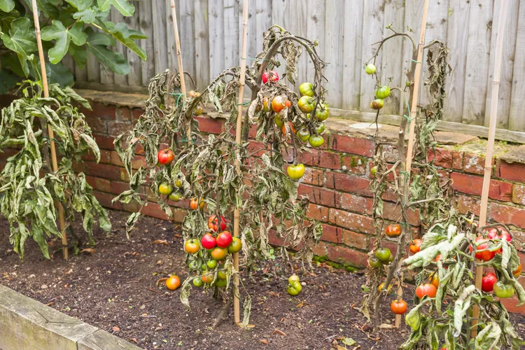
Bacterial Wilt
Caused by the soil-borne bacteria Ralstonia solanacearum, bacterial wilt affects not just tomatoes but also other crops in the Solanaceae family, potentially including peppers, eggplant, and potatoes. The disease is more pronounced in the south, partially because it's inspired by high temperatures.
Symptoms:
- Leaves will begin wilting and can turn yellow or brown, before the whole plant perishes.
Management:
- Remove infected plants immediately and dispose of them. Do not plant solanaceous crops again in this area. There is not much you can do once the disease sets in.
Prevention:
- Rotate crops regularly and sanitize all garden tools. Keep weeds under control.
19. Root Knot Nematodes
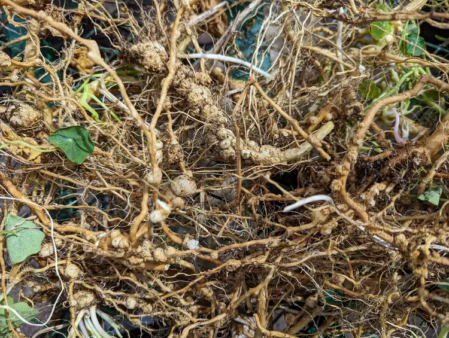
Root Knot NematodesRoot knot nematodes are microscopic, parasitic roundworms that live in soil and eat plants. They can cause damage to far more than just your tomatoes. Because they live in the soil, treatment and management can be tricky.
Symptoms:
- Your tomato plants may be stunted or wilting for reasons you don't understand. Symptoms from root knot nematodes are visible below ground when examining the roots. Roots may be oddly swollen where root-knot nematodes have laid their eggs.
Management:
- Remove infected plants, and plant a different, non-host species in the spot where root knot nematodes are known to live.
Prevention:
- Rotate crops regularly between host and non-host plants, sanitize all tools, and plant French marigolds, which can deter root knot nematodes.
20. Sunscald
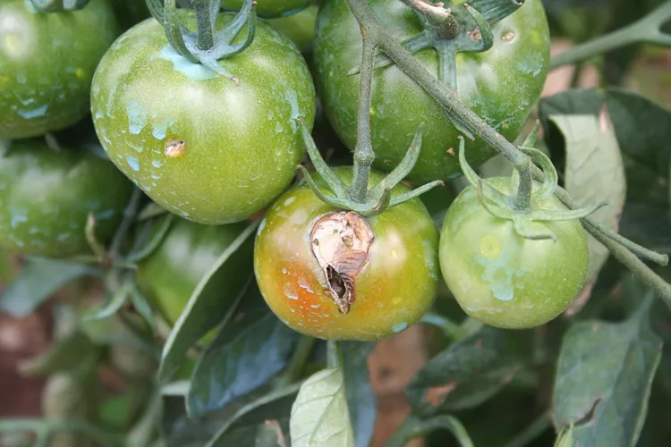
SunscaldIn sunny regions, tomatoes can simply be burned by the sun. This happens more often in hotter USDA zones and after tomato plants have been aggressively pruned, resulting in less natural shade for tomato fruits.
Symptoms:
Management:
- Once tomatoes are burnt, there's not much you can do. Erect some sort of shade structure to prevent remaining fruits and fruits that have yet to emerge.
Prevention:
- Plant your tomatoes in a spot that is protected from midday sun if you live in a hot, sunny region. Avoid pruning too aggressively. Use management techniques to prevent other diseases that result in leaf loss.
21. Bacterial Spot
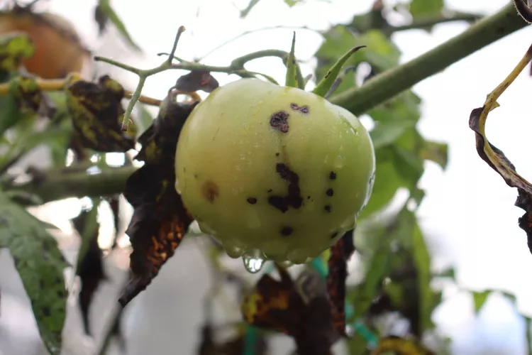
Bacterial SpotBacterial spot is a disease that effects tomatoes and peppers in particularly hot, humid conditions. Multiple bacteria are known to cause this disease, which results in spotty, pitted fruits.
Symptoms:
- Tomato plant leaves will develop small spots that are brown with a yellow ring around them. These spots often fall away and leave holes behind. Fruits may have scabby spots as well.
Management:
- Do not eat infected tomatoes, which can be host to secondary pathogens. Remove infected plants and rotate crops.
Prevention:
- Choose resistant varieties, water in the morning so that excess water has time to dry, space out plants properly.
22. Yellow Leaf Curl
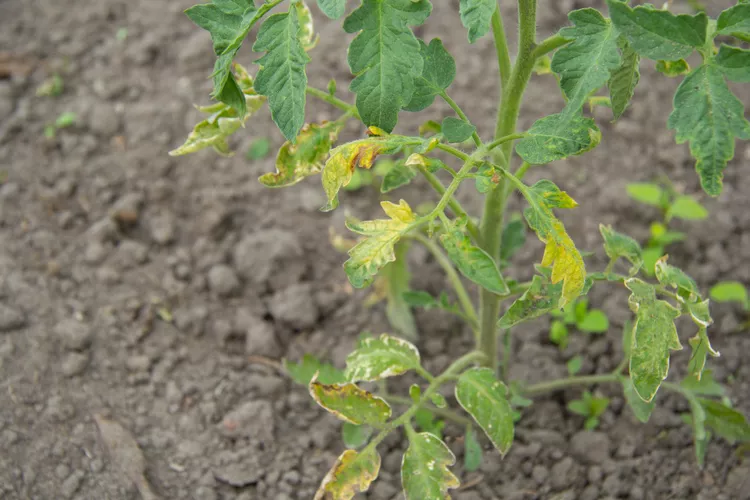
Yellow Leaf CurlYellow leaf curl virus causes yellow leaf curl disease, causing leaves to yellow and curl. The leaves may be smaller than expected and will curl upward. Flowers are more likely to fall off, resulting in less fruit.
Symptoms:
- Small, yellow leaves will curl upward, blossoms may fall off, and fewer fruits will be produced.
Management:
- Remove infected plants and practice aggressive weed control.
Prevention:
- Serious crop rotation, avoiding fields where tomatoes with yellow leaf curl virus have been present. Practice pest prevention, as the virus is often spread through whiteflies.